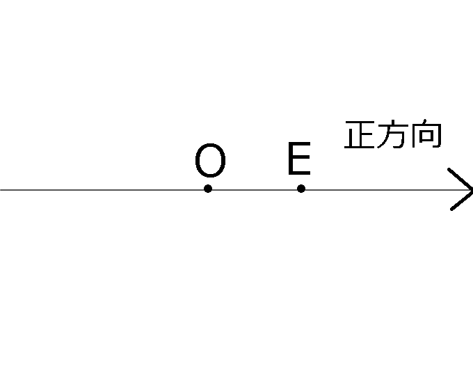

- 有理数
\(m,n(\neq0) \in \mathbb{N}\)において\(m,n\)が互いに素であるとき$$\frac{m}{n}$$と表せる数。
- 無理数
有理数の形で表せない数のこと。
否定の形で定められていることに注意しよう。(→背理法)
- 数直線
ある実数は、直線上の任意の点と全単射(一対一対応)である。
直線上に原点\(O\)とその右側を正方向として、単位点\(E\)を定める。

このとき線分OEの長さを1とすると、OEの長さが単位となる。従って任意の点Aの長さ\(a >0\)を定めることができる。
このときOに対してAがEと同じ側ならば実数\(a\)がAに対応する。
反対に、Oに対してAがEと反対側ならば実数\(-a\)がAに対応する。
以上より、任意の点に対してある実数が全単射[写像]である。
- 座標
点Pに対応する実数xについて、xをPの座標といい、\(P(x)\)と表す。このとき\(O(0),E(1)\)となる。